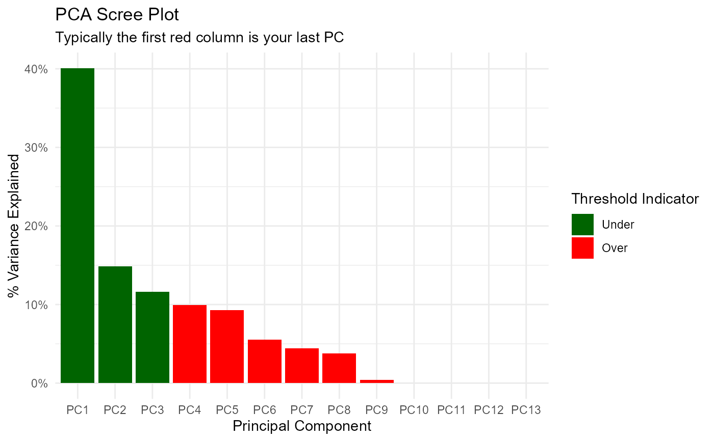

This is a simple function that will perform PCA analysis on a passed recipe.
pca_your_recipe(.recipe_object, .data, .threshold = 0.75)The recipe object you want to pass.
The full data set that is used in the original recipe object passed
into .recipe_object in order to obtain the baked data of the transform.
A number between 0 and 1. A fraction of the total variance that should be covered by the components.
A list object with several components.
This is a simple wrapper around some recipes functions to perform a PCA on a given recipe. This function will output a list and return it invisible. All of the components of the analysis will be returned in a list as their own object that can be selected individually. A scree plot is also included. The items that get returned are:
pca_transform - This is the pca recipe.
variable_loadings
variable_variance
pca_estimates
pca_juiced_estimates
pca_baked_data
pca_variance_df
pca_variance_scree_plt
pca_rotation_df
https://recipes.tidymodels.org/reference/step_pca.html
Other Data Wrangling:
get_juiced_data()
Other Data Recipes:
hai_data_impute(),
hai_data_poly(),
hai_data_scale(),
hai_data_transform(),
hai_data_trig()
suppressPackageStartupMessages(library(timetk))
suppressPackageStartupMessages(library(dplyr))
suppressPackageStartupMessages(library(purrr))
suppressPackageStartupMessages(library(healthyR.data))
suppressPackageStartupMessages(library(rsample))
suppressPackageStartupMessages(library(recipes))
suppressPackageStartupMessages(library(ggplot2))
data_tbl <- healthyR_data %>%
select(visit_end_date_time) %>%
summarise_by_time(
.date_var = visit_end_date_time,
.by = "month",
value = n()
) %>%
set_names("date_col","value") %>%
filter_by_time(
.date_var = date_col,
.start_date = "2013",
.end_date = "2020"
)
splits <- initial_split(data = data_tbl, prop = 0.8)
rec_obj <- recipe(value ~ ., training(splits)) %>%
step_timeseries_signature(date_col) %>%
step_rm(matches("(iso$)|(xts$)|(hour)|(min)|(sec)|(am.pm)"))
output_list <- pca_your_recipe(rec_obj, .data = data_tbl)
output_list$pca_variance_scree_plt
